Cronograma de desligamentos das SEs


Linha do tempo
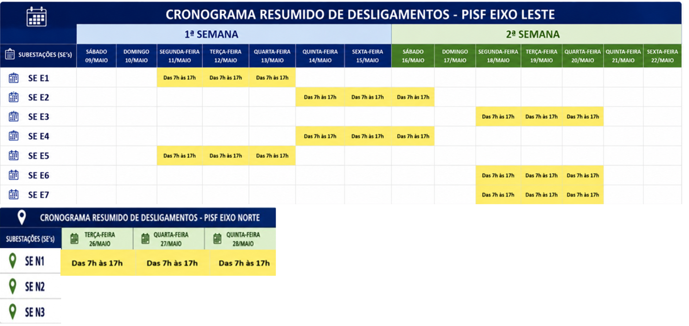
Cubículo de 6,9 kV (megômetro)
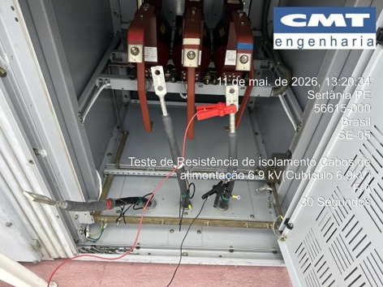
cabos de alimentação
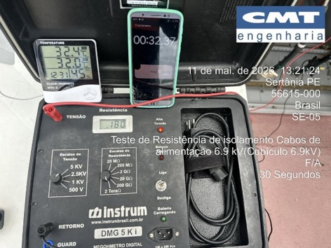
Ventiladores do transformador (megômetro)
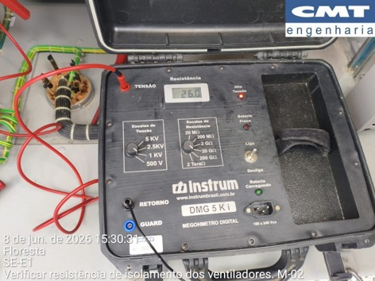
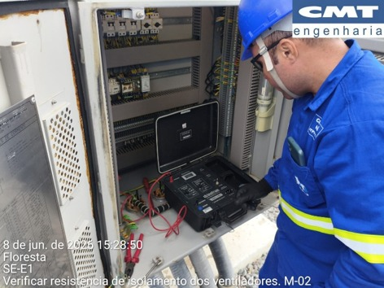
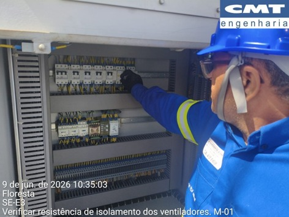
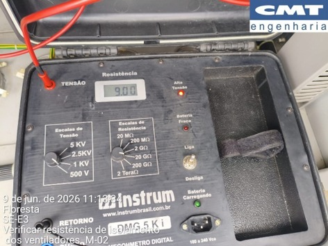
Seccionadoras (microhmímetro)
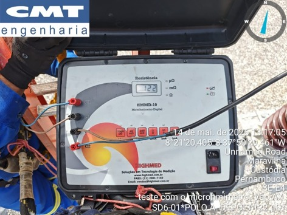
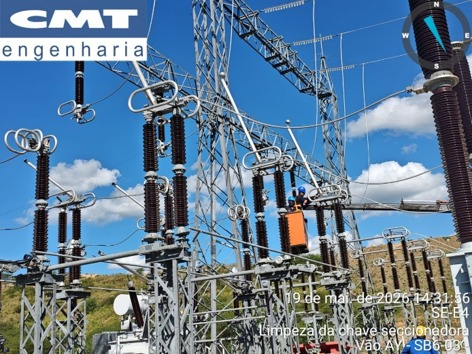
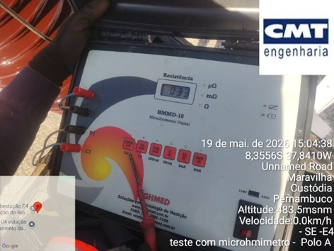
TC (fator de potência)
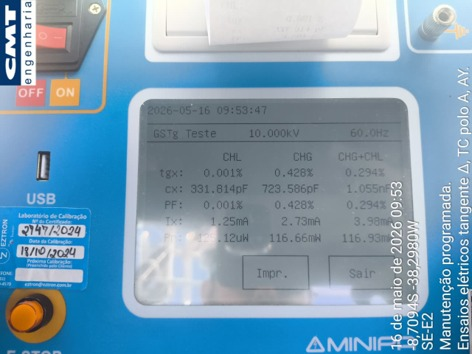
tangente delta (10 kV / 60 Hz)
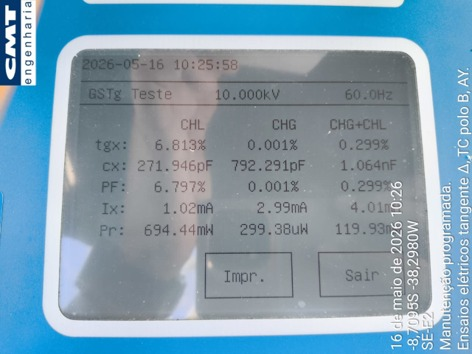
tangente delta (10 kV / 60 Hz)
Uso geral dos instrumentos
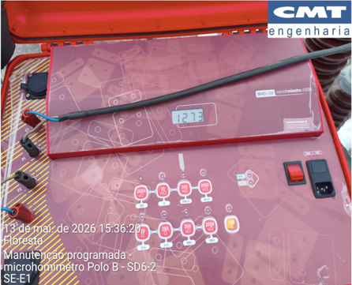
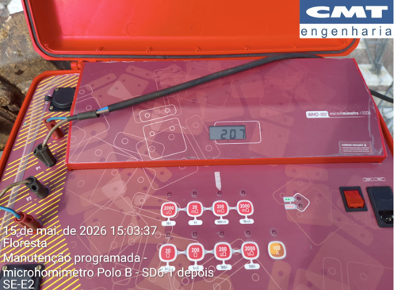
Troca de conector terminal do TP
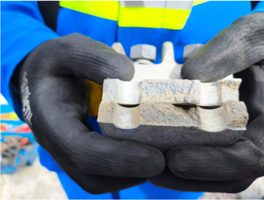

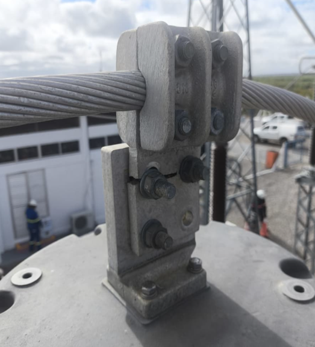
Limpeza em componentes metálicos
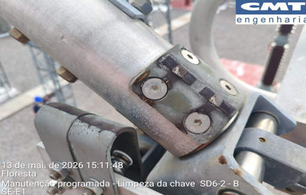
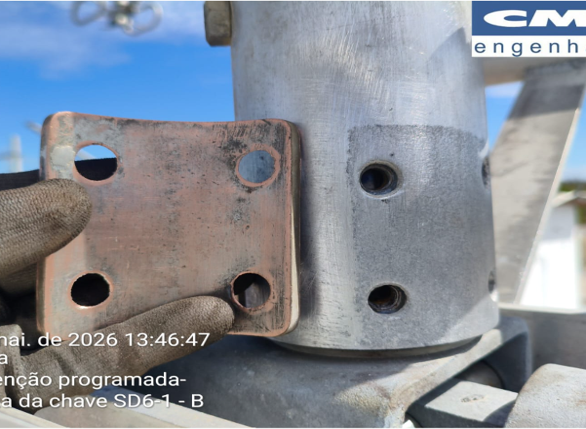
Correção de oxidação (TSA-01)
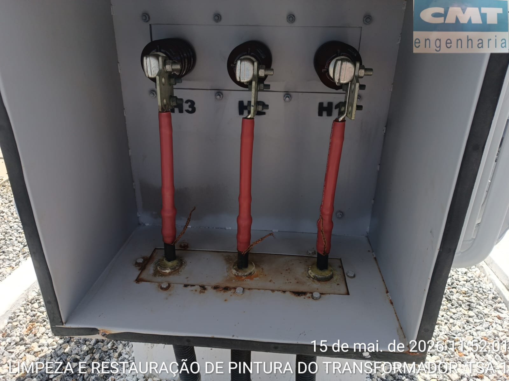
antes
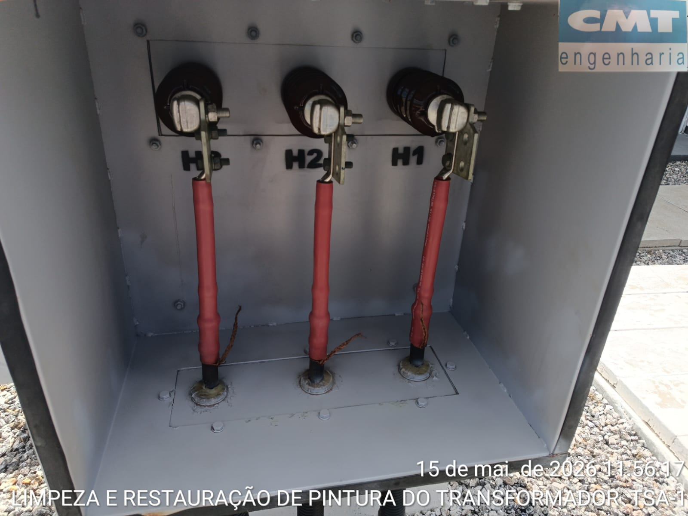
depois
Correção de oxidação (cubículo)
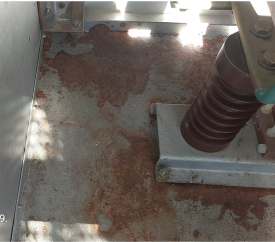
antes
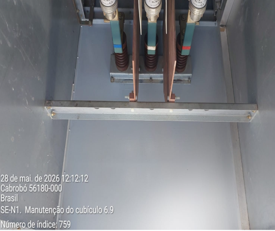
depois
Atividades diversas
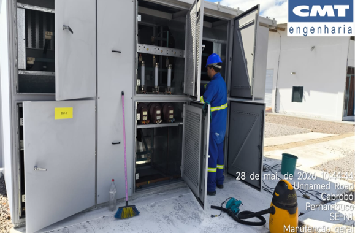
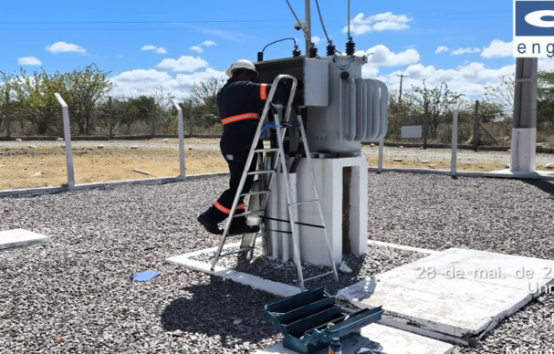
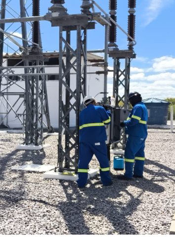
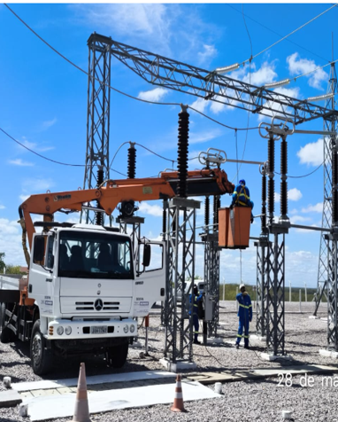
Buchas do transformador
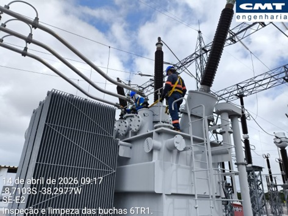
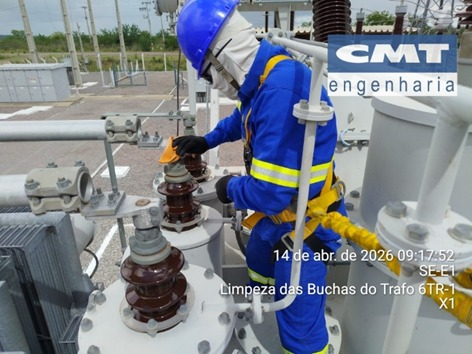
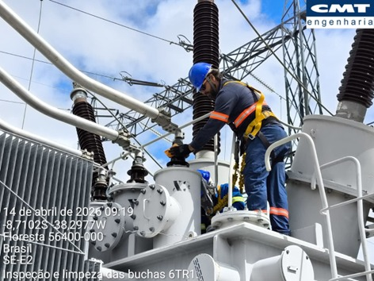
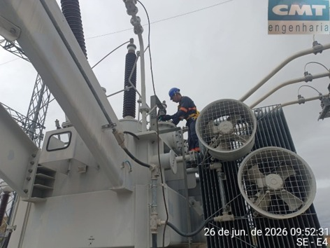
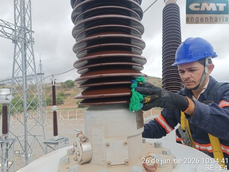
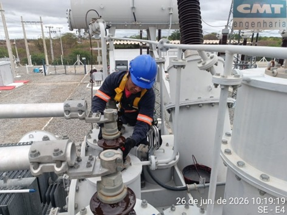
TC e isoladores
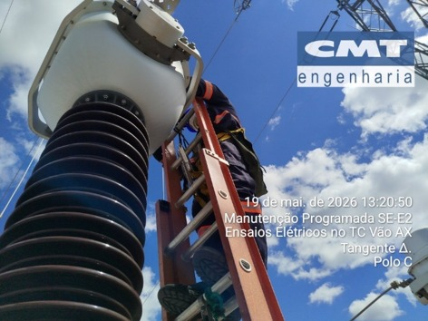
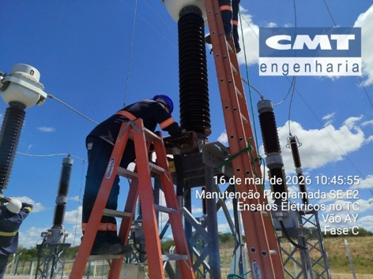
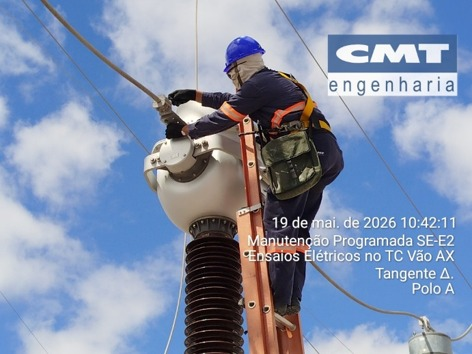
Retificador
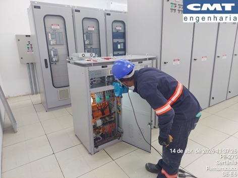
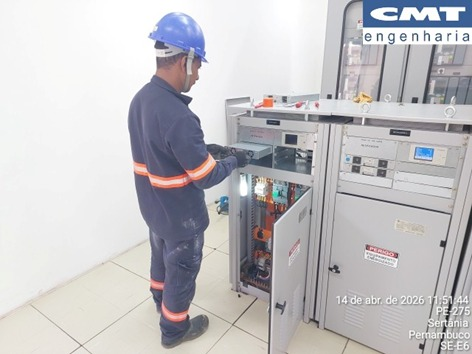
Chave-seccionadora
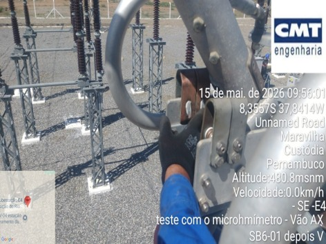
Ajuste dos conectores dos pulos em “T”
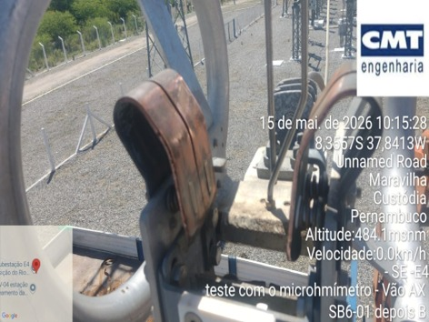
Ajuste dos conectores dos pulos em “T”
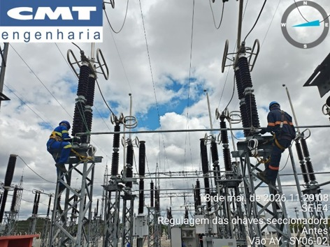
Verificação dos contrapinos (cupilhas)
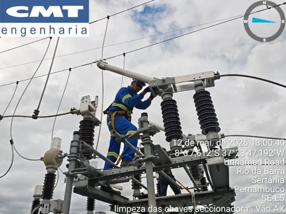
Limpeza dos conectores e contatos
Conectores do transformador de corrente
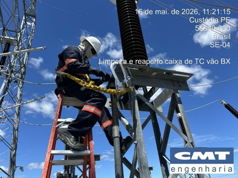
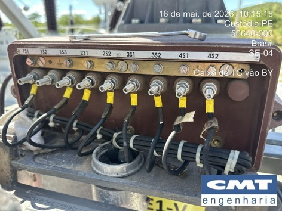
Terminais de borne dos quadros e painéis
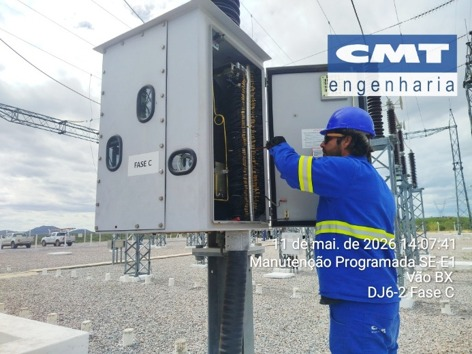
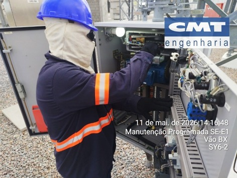